从注册账号开始，把 Codex 生成的静态网页上传到 GitHub，再用 Vercel 发布成任何人都能打开的网址。
本地开发环境只在你的电脑里存在，换一台电脑，就看不到。
只能在自己电脑上打开。
没有公开网址，就不能被别人访问。
一个负责托管代码，一个负责把网站部署到互联网上。
代码托管 / 协作平台
云端部署 / 生成公开链接
它像程序世界的网盘，但更重要的是代码托管、开源协作和团队修改的入口。
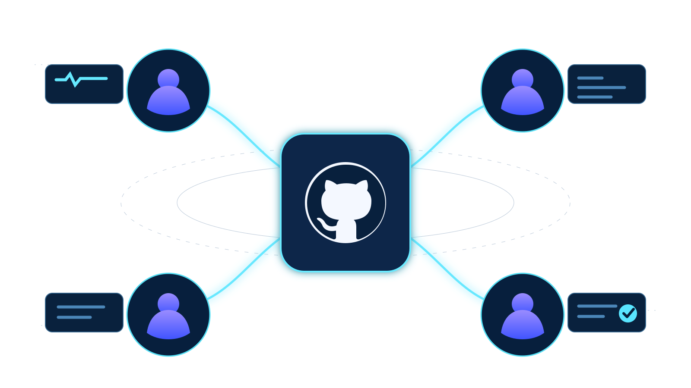
Vercel 的价值不是写代码，而是把本地文件变成可转发、可访问、可更新的公开网站。
命名为小写的 index.html，这样别人打开根链接时，页面会自动显示。
推荐结构：index.html、style.css、script.js、images/。
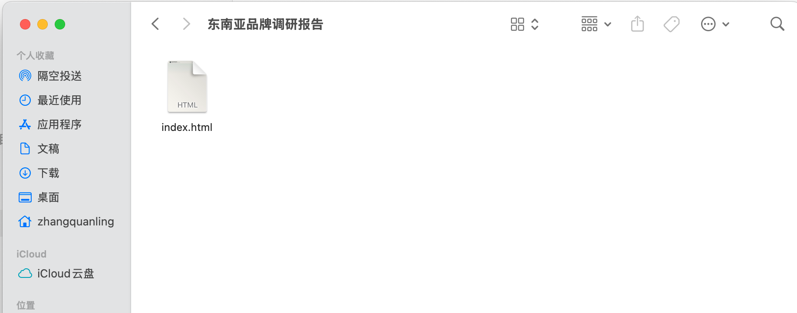
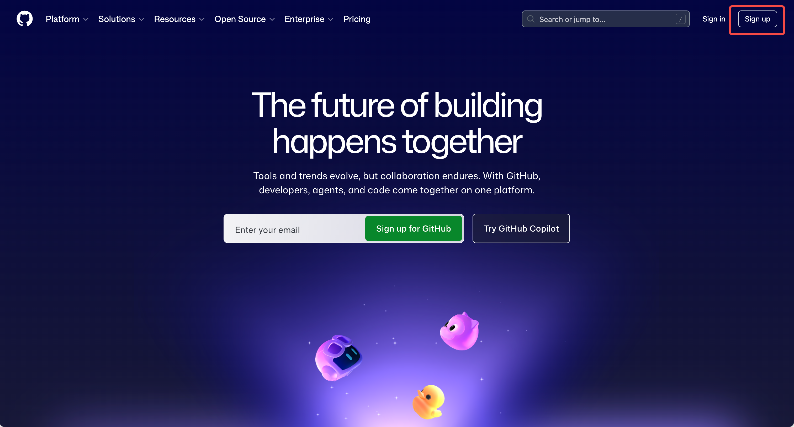
先打开 https://github.com。GitHub 用户名会出现在仓库地址里，建议用英文或拼音。邮箱验证要完成，否则后面可能无法正常创建仓库。
建议后续用 GitHub 登录 Vercel
如果是首次注册 GitHub，左侧可能会出现 Create repository；如果已有仓库，点击右上角 +，选择 New repository。
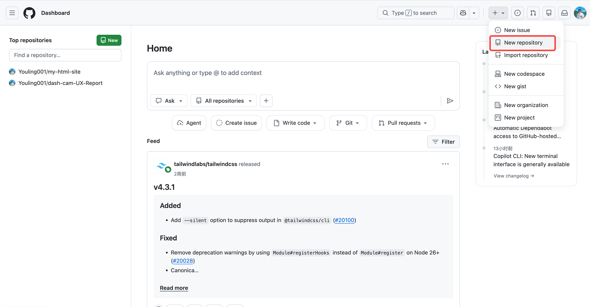
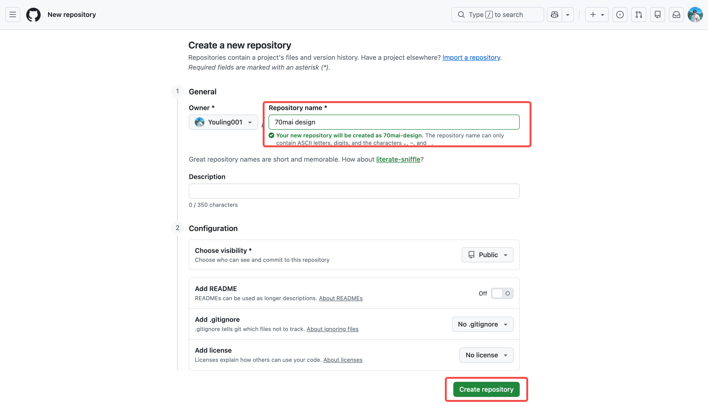
可以用 my-html-site、brand-report、portfolio-page；中文不是绝对不行，但排查路径时英文更省心。
新手推荐 Public；README 可以先不勾选。
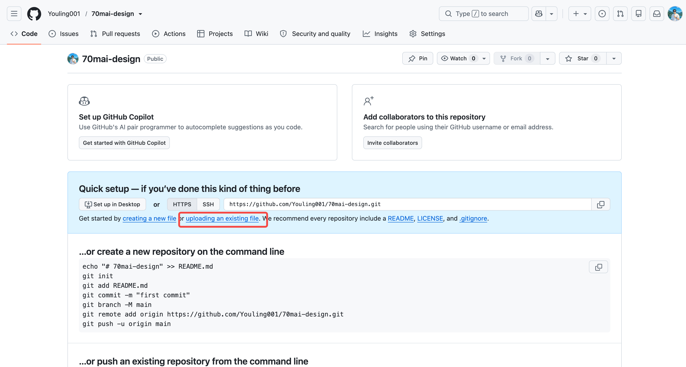
creating a new file 是在线手写代码；我们现在要上传电脑里的真实文件，所以应选择 uploading an existing file。
仓库里已经有文件时，常见 Add file -> Upload files。
如果有 style.css、script.js、images，也一起上传
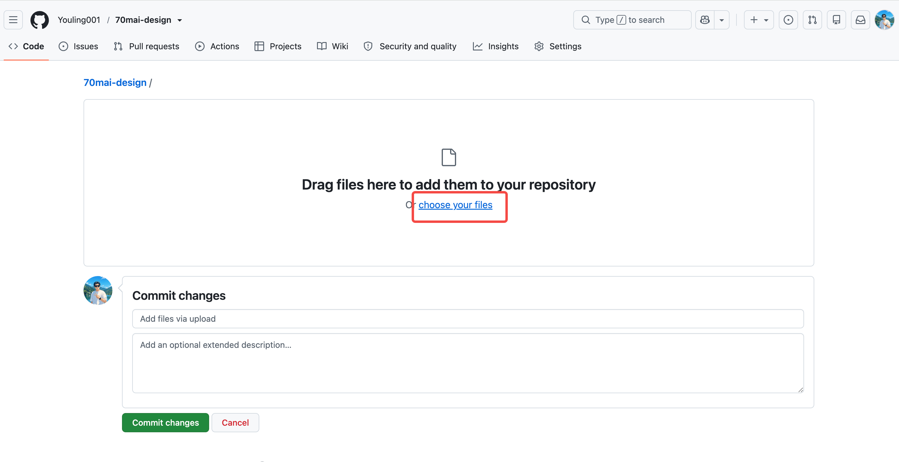
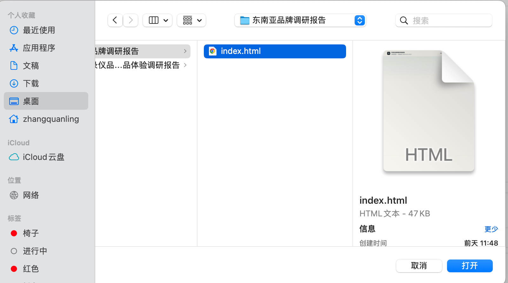
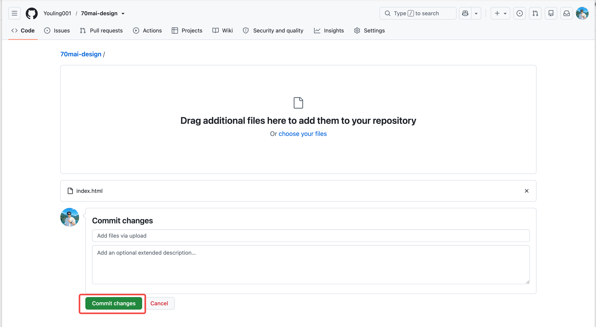
关键检查点: 根目录 / index.html / 文件名大小写
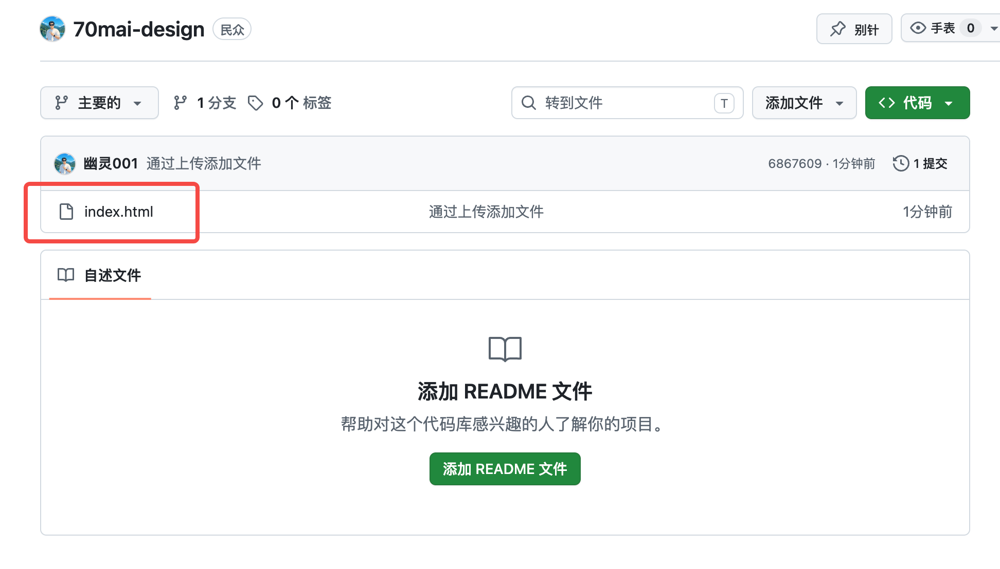
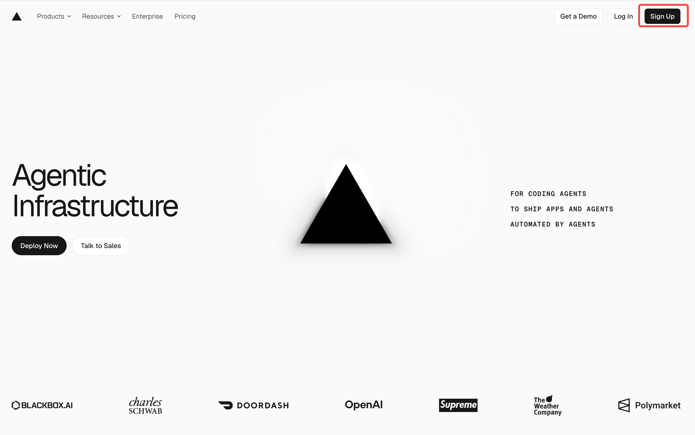
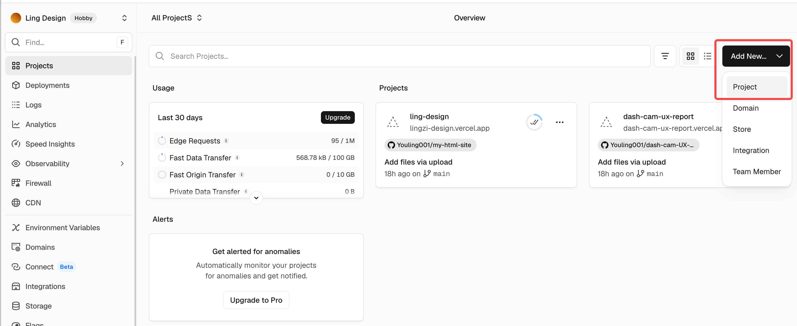
登录 Vercel 后，在项目页右上角点击 Add New，选择 Project
Vercel 项目不是 GitHub 仓库的替代品，它是发布入口。
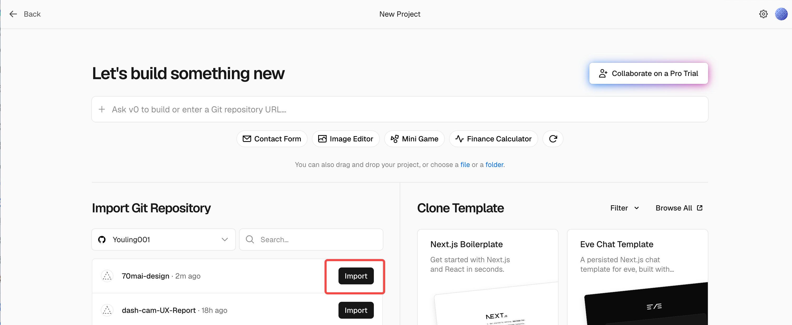
在 Import Git Repository 里找到刚刚创建、并上传了 index.html 的仓库，点击右侧 Import。
如果还没有关联 GitHub，Import Git Repository 区域会出现选择 Git 提供程序的引导。
Application Preset 选择 Other，Root Directory 保持 ./，确认无误后点击底部 Deploy。
index.html style.css script.js
website/ index.html style.css script.js
新手最推荐第一种：直接把 index.html 放在仓库最外层。
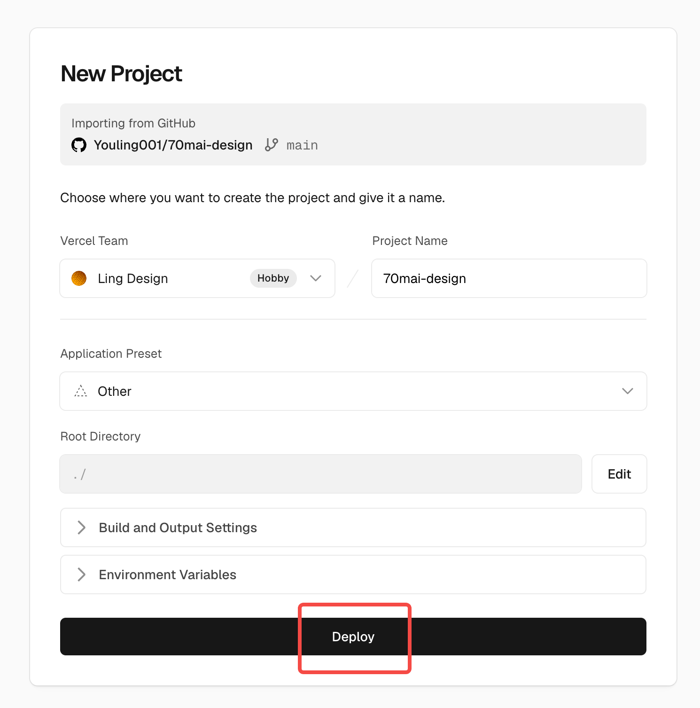
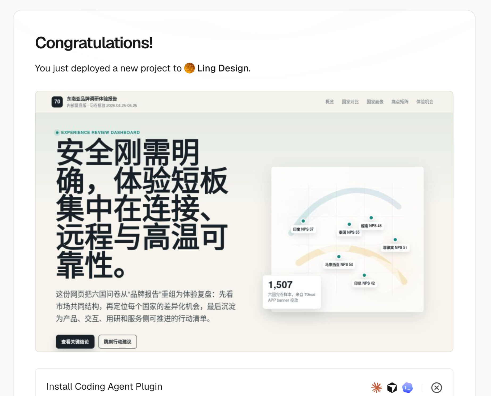
点击图片可预览网站GitHub 地址给人看的是文件仓库；Vercel 地址才是访问网页。自己先用浏览器打开一次，再转发给别人。
记住这条线：本地文件 -> GitHub 仓库 -> Vercel 链接。